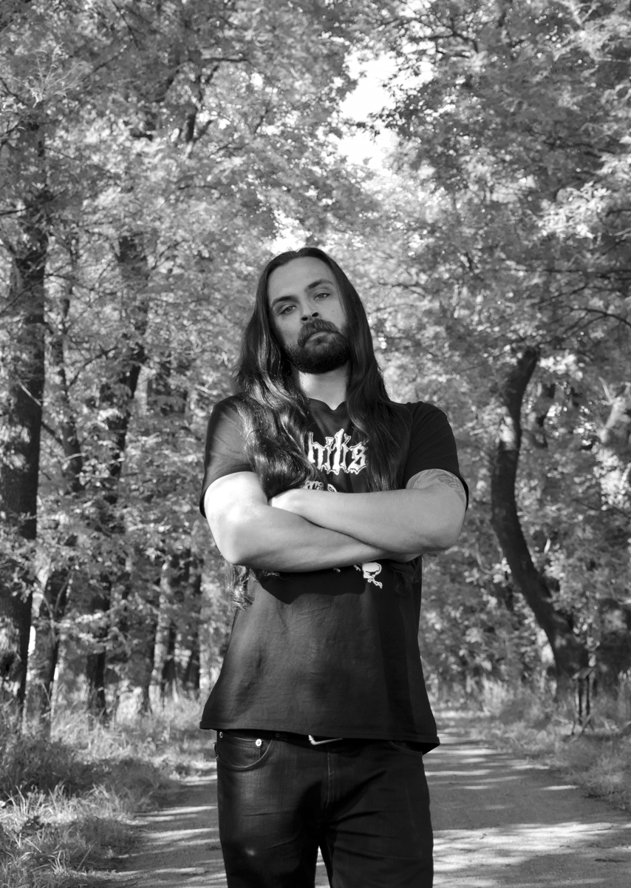
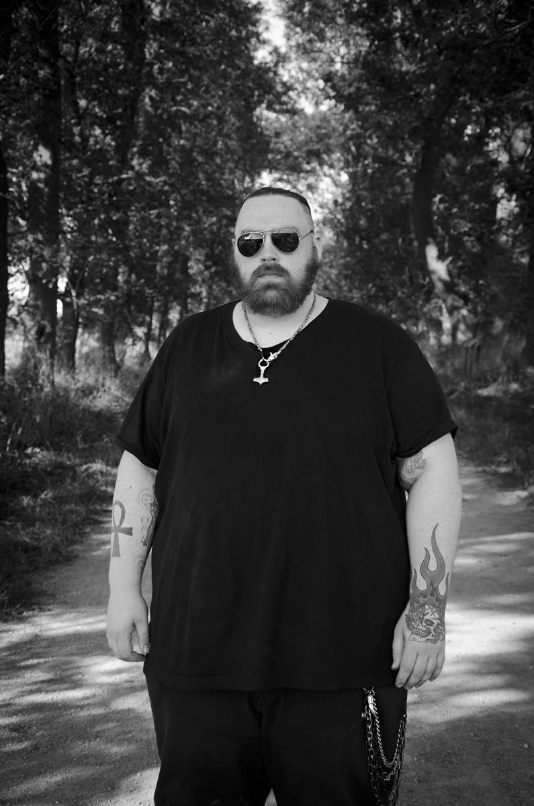
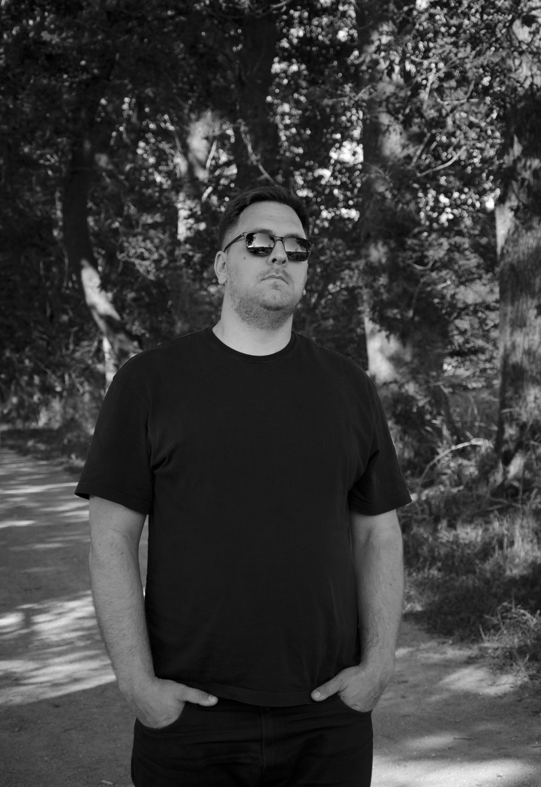
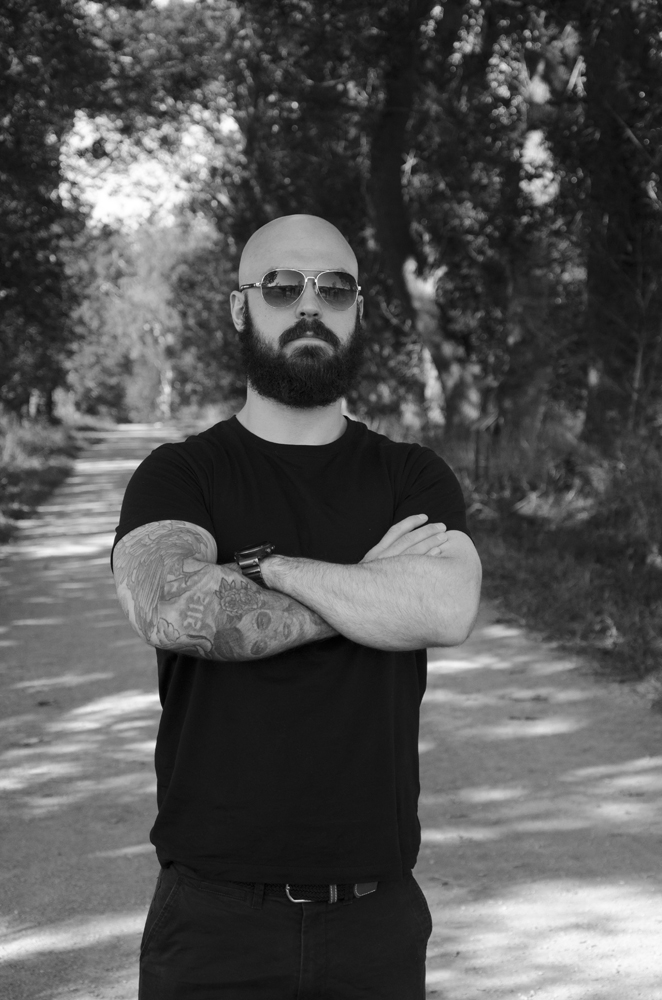
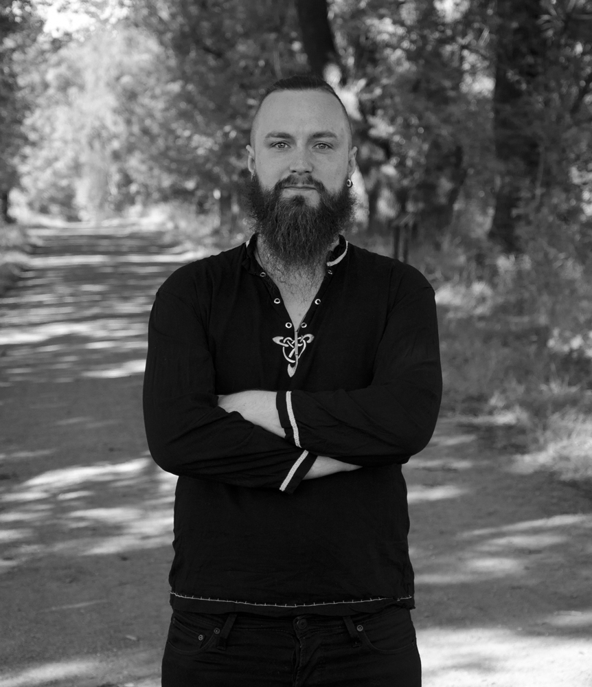

BLODTØRST
Trondheim
BLODTØRST is an extreme metal band from Trondheim. Conceived in 2019 by two black metal-heads, a death metal vocalist, a heavy rock guitarist, and an extreme metal drummer, the members found common ground in wanting to create music under the extreme metal moniker. The band’s mantra has from the start to follow no fixed musical route, but rather follow the current mood in the band when creating music. The members can bring anything to the table and the band will make it BLODTØRST. BLODTØRST’s debut album FERD was released on March 12th, 2021. The album is inspired by diverse Norwegian nature and follows foul creatures, scum, outcasts on their journeys. Following the release of FERD and the amicable split with original guitarist Dag Axel A. Loe, powerhouse guitarist Jørgen Alexandersen joined the band in 2021. Now, their upcoming album DALMUNR dives deeper into the backstory of FERD’s title track, in a grizzly original story penned by vocalist Mathias J. Rye. The mix is organic and brutal, with minimal use of “studio magic”, to capture the violence that is BLODTØRST.
Vocals - Mattias Jamtli Rye
Bass - Raymond Hansen
Drums - Mads Aas
Rhytm guitar - Jørgen Alexandersen
Lead guitar - Andreas Almvik Johnsen
RELEASES

DALMUNR
2023

FERD
2021